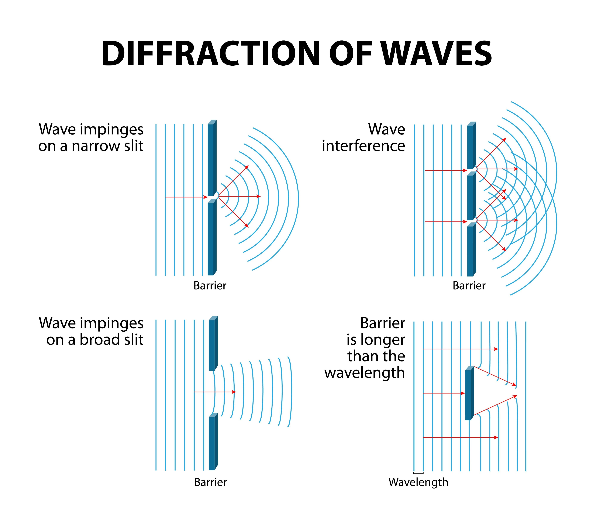

【業界トレンド】画像センシングにおける光学設計と電磁波戦略
「波の性質」を完全制御し、肉眼を超えた次世代自動検査システムを構築する
「波の性質」を完全制御し、肉眼を超えた次世代自動検査システムを構築する
製造現場における自動検査の成否は、いかにして「情報の源」である鮮明な画像を取得できるかにかかっています。 光の「波の性質」を紐解き、可視光の枠を超えた波長戦略が、人員削減と歩留まり向上というDXの至上命題を解決します。
図1：光の波動性とエネルギー伝搬
ワークの材質と状態に合わせたライティング設計が、AIの誤検知を物理的に防ぎます。

図2：光学反射・散乱のメカニズム

図3：電磁波の領域と透過特性
| 領域 | 得意分野 | 用途 |
|---|---|---|
| 光 (Visible) | 高精細外観 | 表面キズ・色選別 |
| 赤外 (IR) | 透過・熱検知 | 液量・内部構造 |
| 電波 (Radio) | 障害物越え | 存在検知・距離計測 |
光学系の熱歪みや環境変動による乱れを波面センサで計測し、動的に補正することで回折限界の解像度を維持します。超精密な計測自動化には不可欠な技術です。

図4：波面制御による解像度復元

図5：周辺歪み（ディストーション）の影響

図6：テレセントリック等による幾何学補正後
主光線を制御し、周辺部の歪み（yugami）を徹底的に排除（defre）することで、正確な寸法計測と位置決めが可能になります。
単に「撮る」のではなく、物理特性を利用して「判定を容易にする」設計こそが、
24時間無人稼働を実現するDXの核心です。